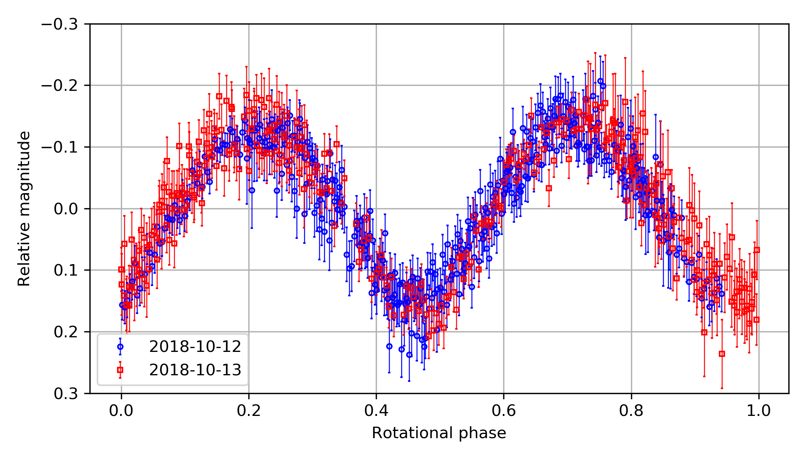

HW pandas#
Instructions#
Please use python 3.6+ (Never use python 2).
For other packages: Although I didn’t run all the tests, likely there will be no problem if you use decently recent versions of any packages used in the homework (any version released after 2017).
Here we will learn how to code in pythonic way. Start solving the problems after running the code below:
import numpy as np
import pandas as pd
from matplotlib import pyplot as plt
plt.style.use('default')
np.random.seed(123)
data_str = '''jd_target,m_red,dm_red,serious
2458403.9602,17.1008,0.0738,0
2458403.9722,17.1255,0.0429,0
2458403.9842,17.1770,0.0420,0
2458403.9961,17.2755,0.0412,0
2458404.0081,17.3114,0.0435,0
2458404.0201,17.3947,0.0377,0
2458404.0321,17.2879,0.0340,0
2458404.0440,17.2120,0.0312,0
2458404.0560,17.0571,0.0277,0
2458404.0680,17.0799,0.0277,0
2458404.0800,17.0958,0.0272,0
2458404.0920,17.1262,0.0271,0
2458404.1040,17.2231,0.0304,0
2458404.1159,17.3279,0.0312,0
2458404.1401,17.2705,0.0277,0
2458404.1521,17.1999,0.0222,0
2458404.1641,17.0976,0.0209,0
2458404.1761,17.0944,0.0228,0
2458404.1881,17.0537,0.0249,0
2458404.2001,17.0836,0.0249,0
2458404.2122,17.1790,0.0245,1
2458404.2242,17.2610,0.0303,0
'''
While answering the problems, follow these rules:
You should not import any other packages.
For each problem, I gave hints. It is also homework for you to search for those on google.
Problems [40 points]#
The data_str is the photometry results of an asteroid (155140) 2005 UD taken at the SNU Astronomical Observatory (SNUO or SAO) 1-m telescope. I selected only 22 data points out of 811 data points. jd_target is roughly the observation time in JD, m_red is the reduced magnitude (please regard it as the magnitude of the asteroid), dm_red is the error of it, and serious is 1 if the image had serious problem, so should not be used.
Reference
The results from this observation are published as Ishiguro, Bach, Geem et al. 2022, and the reduction/plotting codes are available via GitHub.
[2 points each]
You can fill in the >>FILLHERE<< parts in the Hints and use that to answer the questions. Or, you can just make your own answer, ignoring the Hints.
Make a DataFrame from
data_str. Give it a namedf.Hint:
pd.read_csv(pd.compat.StringIO(?))
Print the first 3 rows of the
df.Hint: use
.head()
Print the last 3 rows of the
df.Hint: use
.tail()
See
df.describe(). What is the roughly estimated mean magnitude?Print the latex code for the data to make a table.
Hint: use
print(df.to_latex(index=False))There are other conversions, to HTML, numpy, etc.
Check whether the unique elements of the column
seriousare 0 and 1.Hint: use
.unique()to the column.
To get an idea how the data looks like, plot the error-bar of the
m_redas a function of JD.Hint:
plt.errorbar(df["jd_target"], df["?"], df["dm_red"])
The error-bar of magnitude is not Gaussian, but the error-bar of flux is nearly Gaussian. In usual photometry, what we get is the flux error but we only present the magnitude error which is calculated (estimated) from the flux error. From the
dm_red, recover the error-bar of the flux.Hint: The flux error and magnitude errors are related by
dm = 2.5 / np.log(10) * dflux.Hint: The inversion of the equation may give
df["dflux"] = ? * df["dm_red"]
Actually,
"dflux"column is useless. Remove this column.Hint: Use
.drop(columns=["dflux"], inplace=?).The
inplaceoption can either beTrueorFalse, depending on how you do (if you can’t understand it, Google it!)
Make a mask to mask rows with
serious==1. Name itmask_serious.Hint:
df["serious"]==1
Replace the
dm_redof the masked row asNaN.Hint: Use
df.loc[mask, "dm_red"]
You found that, for some reason, the 3th row is problematic. Replace
"m_red"of this row toNaN.Hint: Use
df.loc[3, "m_red"]ordf.iloc[3, 1].
Drop any row which contains any NaN values.
Hint: Use
df.dropna(inplace=?)
If you see
df, the index (leftmost column) is missing3and20. Reset this such that it is consecutive integers of separation 1.Hint:
df.reset_index(inplace=?, drop=True)
From Ishiguro et al. 2019, it is found the period of the asteroid is 0.218282 +/- 0.000092 day. Add a column called
"phase".Hint: Use
df["jd_target"]%0.218282 / 0.218282
Make a column
"first_half", and assignTrueif phase is smaller than 0.5, andFalseotherwise.Hint:
df["first_half"] = df["phase"] < 0.5
Make a column
"faint", and assignTrueifm_redis larger(fainter) than the mean calue, andFalseotherwise.Hint:
df["faint"] = df["m_red"] > df["m_red"].mean()
Make
DataFrameGroupByobject based on the columns["first_half", "faint"].[4 points] Fill in the following code to plot a graph such that the marker is
red when
first_half==Trueand blue otherwise,empty inverse triangle (
"v") whenfaint=Trueand filled triangle ("^") otherwise and the y-axis decreases as go upward (lower 17.5, upper 17.0), because it’s magnitude.
# first faint props = {(True, True): dict(marker="v", color="r", mfc="none"), (True, False): dict(marker="^", color="r"), (False, True): dict(marker="v", color="b", mfc="none"), (False, False): dict(marker="^", color="b") } fig, axs = plt.subplots(1, 1, figsize=(6, 4), sharex=False, sharey=False, gridspec_kw=None) for (first, faint), g in grouped: axs.errorbar(g["phase"], g["m_red"], yerr=g["dm_red"], **props[(>>FILLHERE<<, >>FILLHERE<<)], ls='', ms=10) axs.set(ylim=(>>FILLHERE<<, 17), xlabel="Phase", ylabel="Reduced magnitude") axs.grid() plt.tight_layout() plt.show()
TIP
There are some occasions when it’s better to use for than simple df["blahblah"] = df["col1"] * df["col2"], especially when complicated calculation is needed. In such cases, you can use
for i, row in df.iterrows():
first_half = row["phase"] < 0.5
df.at[i, "first_half"] = first_half
Things go well in this case with loc, but I used at.
locis slower, but you can access to multiple locationsatis quicker, but you can access to only one single location
See here
The full light curve of this asteroid, from the 2-night observation at SNU is like this:
